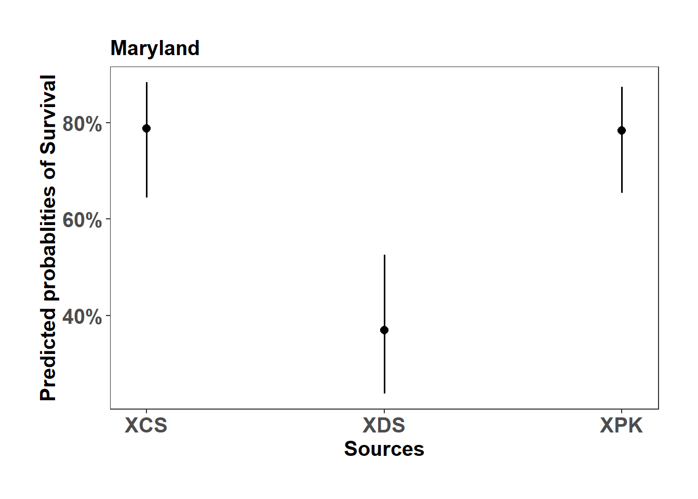
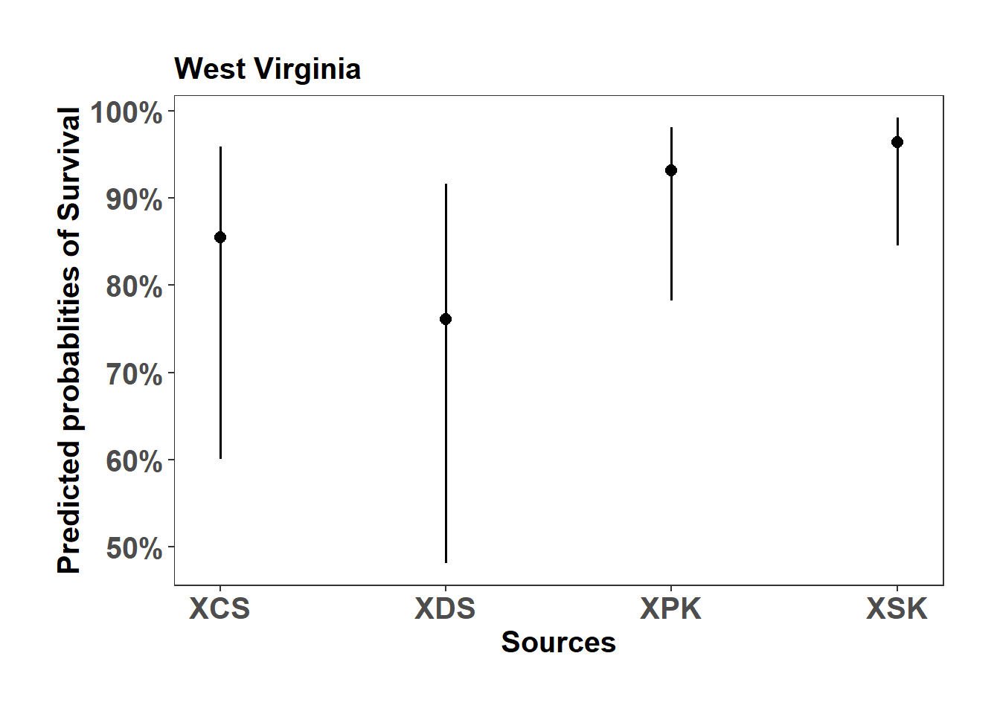
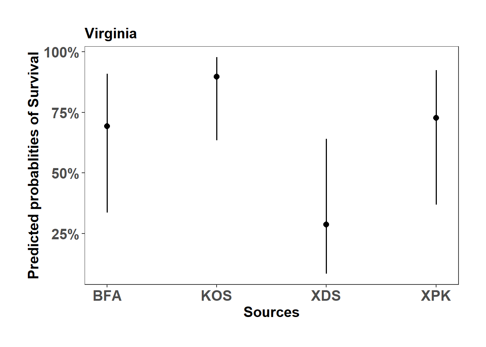
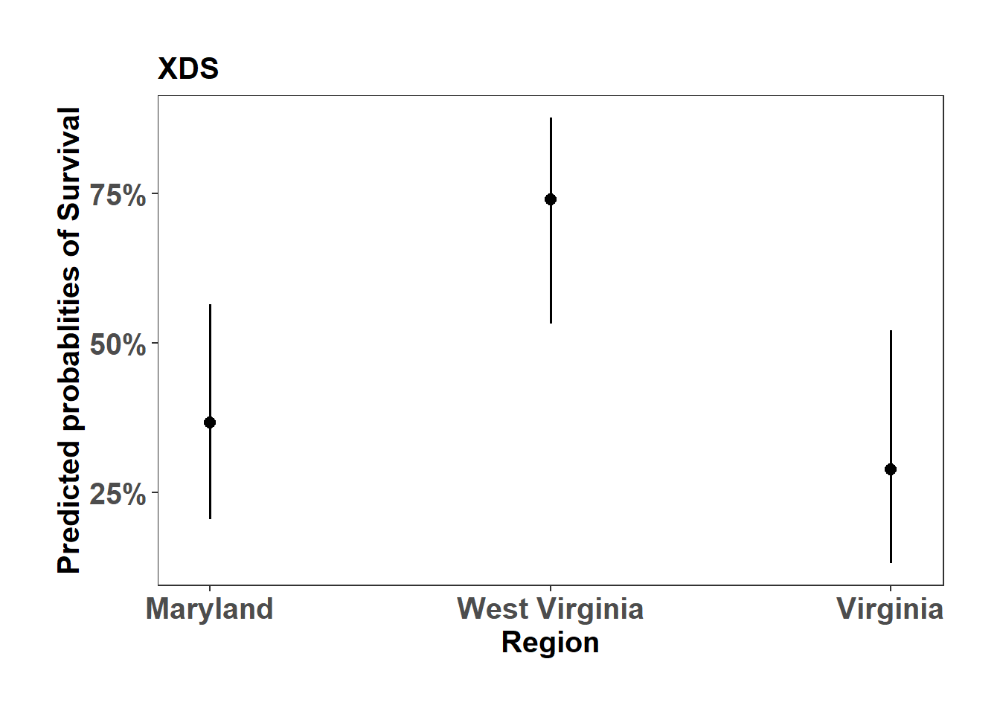
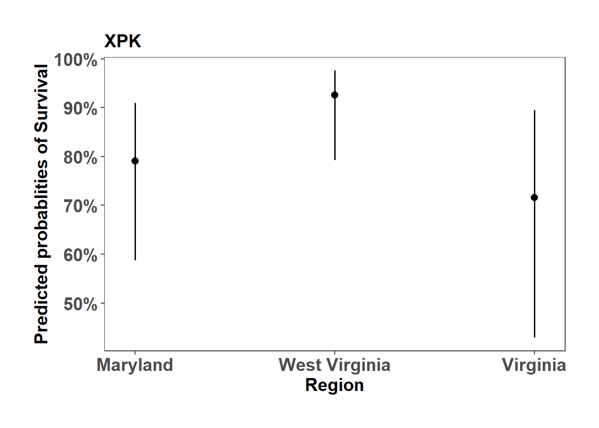
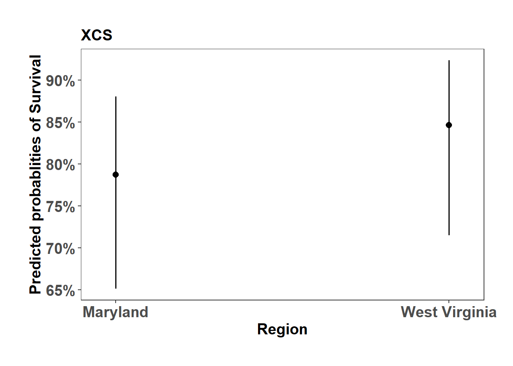
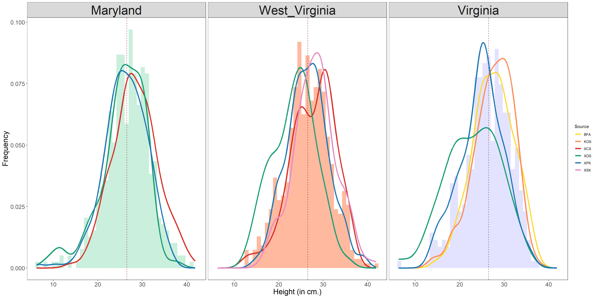

# packages
require(lmerTest)
require(dplyr)
require(tidyr)
require(DT)
require(multcomp)
require(sjPlot)
require(ggplot2)4 Field Monitoring of survivorship and height
The survivorship and height measured from the experimental plots at Maryland, West Virginia and Virginia. The following code details the analysis run to eliminate the replication/block effect and look at the variance in height data across sources. We also look into how each source differs from the mean of the total populations.
4.1 Survivorship
Data
mort_data <- read.csv("./data/tnc_spring_2022.csv", header=TRUE, stringsAsFactors = T)
mort_data$Region <- factor(mort_data$Region, levels = c('Maryland', 'West_Virginia', 'Virginia'))
mort_data$Damage[is.na(mort_data$Height)] <- "Dead"
mort_data$Mortality[mort_data$Damage=="Dead"] <- 0
mort_data$Mortality[mort_data$Damage!="Dead"] <- 1
MD_mort_data <- mort_data[mort_data$Region == "Maryland",]
WV_mort_data <- mort_data[mort_data$Region == "West_Virginia",]
VA_mort_data <- mort_data[mort_data$Region == "Virginia",]Set up dummy data.frame
# Initialize an empty data frame to store results
Source_Mortality <- NULL
Region_Mortality <- NULL
Region_Mortality <- data.frame(Region = character(),
Source = character(),
Vp = numeric(),
mean = numeric(),
H2 = numeric(),
Va = numeric(),
Mortality = numeric(),
stringsAsFactors = T)
Source_Mortality <- data.frame(Region = character(),
Source = character(),
Vp = numeric(),
mean = numeric(),
H2 = numeric(),
Va = numeric(),
Mortality = numeric(),
stringsAsFactors = T)
# Initialize an empty list to store models
model_list <- list()
Model ‘for loop’
# subset based on region
for (Region in unique(mort_data$Region)) {
# subset based on region
subset_data <- mort_data[mort_data$Region == Region,]
# Remove unused levels from the Source factor
subset_data$Source <- droplevels(subset_data$Source)
# model
model <- glmer(Mortality ~ 1+ Source + (1|Replication), data = subset_data,family = 'binomial')
# Store model results
model_name <- paste0(Region, "_mort_model")
model_list[[model_name]] <- model
}MD_mort_data$fit <- predict(model_list$Maryland_mort_model)
WV_mort_data$fit <- predict(model_list$West_Virginia_mort_model)
VA_mort_data$fit <- predict(model_list$Virginia_mort_model)
predict_dat <- rbind(MD_mort_data,WV_mort_data,VA_mort_data)
predict_dat$Region <- factor(predict_dat$Region, levels=c('Maryland', 'West_Virginia', 'Virginia'))4.1.1 Model summary (Region)
4.1.1.1 Maryland
summary(model_list$Maryland_mort_model)Generalized linear mixed model fit by maximum likelihood (Laplace
Approximation) [glmerMod]
Family: binomial ( logit )
Formula: Mortality ~ 1 + Source + (1 | Replication)
Data: subset_data
AIC BIC logLik deviance df.resid
770.7 788.8 -381.3 762.7 676
Scaled residuals:
Min 1Q Median 3Q Max
-2.8135 -0.7732 0.4149 0.6272 2.0378
Random effects:
Groups Name Variance Std.Dev.
Replication (Intercept) 0.5058 0.7112
Number of obs: 680, groups: Replication, 17
Fixed effects:
Estimate Std. Error z value Pr(>|z|)
(Intercept) 1.31706 0.36714 3.587 0.000334 ***
SourceXDS -1.84924 0.48995 -3.774 0.000160 ***
SourceXPK -0.02717 0.49464 -0.055 0.956189
---
Signif. codes: 0 '***' 0.001 '**' 0.01 '*' 0.05 '.' 0.1 ' ' 1
Correlation of Fixed Effects:
(Intr) SrcXDS
SourceXDS -0.751
SourceXPK -0.739 0.554ghlt_MD <- glht(model_list$Maryland_mort_model, linfct = mcp(Source = "Tukey"),test=adjusted("holm"))
summary(ghlt_MD)
Simultaneous Tests for General Linear Hypotheses
Multiple Comparisons of Means: Tukey Contrasts
Fit: glmer(formula = Mortality ~ 1 + Source + (1 | Replication), data = subset_data,
family = "binomial")
Linear Hypotheses:
Estimate Std. Error z value Pr(>|z|)
XDS - XCS == 0 -1.84924 0.48995 -3.774 0.000459 ***
XPK - XCS == 0 -0.02717 0.49464 -0.055 0.998336
XPK - XDS == 0 1.82206 0.46484 3.920 0.000243 ***
---
Signif. codes: 0 '***' 0.001 '**' 0.01 '*' 0.05 '.' 0.1 ' ' 1
(Adjusted p values reported -- single-step method)MD_mort_plot <- sjPlot::plot_model(model_list$Maryland_mort_model, type="pred", axis.title = c("Sources","Predicted probablities of Survival"), title = "Maryland")
MD_mort_plot$Source +
ylab("Predicted probablities of Survival") +
scale_color_manual( values = c("#D73027","#1B9E77","#1F78B4"))+
theme_bw() +
theme(axis.text=element_text(size=15, face = "bold"),
axis.title=element_text(size=15, face = "bold"),
plot.title = element_text(size=15, face = "bold"),
legend.position = "right",
plot.background = element_blank(),
panel.grid.major = element_blank(),
panel.grid.minor = element_blank(),
panel.background = element_blank(),
plot.margin = unit(c(1,1,1,1), "cm"),
strip.text.x = element_text(size = 15, colour = "black", face = "bold")) 
4.1.1.2 West Virginia
summary(model_list$West_Virginia_mort_model)Generalized linear mixed model fit by maximum likelihood (Laplace
Approximation) [glmerMod]
Family: binomial ( logit )
Formula: Mortality ~ 1 + Source + (1 | Replication)
Data: subset_data
AIC BIC logLik deviance df.resid
574.2 597.1 -282.1 564.2 715
Scaled residuals:
Min 1Q Median 3Q Max
-3.3033 0.1195 0.3027 0.4744 1.1717
Random effects:
Groups Name Variance Std.Dev.
Replication (Intercept) 1.723 1.313
Number of obs: 720, groups: Replication, 18
Fixed effects:
Estimate Std. Error z value Pr(>|z|)
(Intercept) 1.7731 0.6968 2.545 0.0109 *
SourceXDS -0.6137 0.9381 -0.654 0.5130
SourceXPK 0.8408 0.9712 0.866 0.3866
SourceXSK 1.5055 1.0617 1.418 0.1562
---
Signif. codes: 0 '***' 0.001 '**' 0.01 '*' 0.05 '.' 0.1 ' ' 1
Correlation of Fixed Effects:
(Intr) SrcXDS SrcXPK
SourceXDS -0.741
SourceXPK -0.714 0.542
SourceXSK -0.652 0.498 0.492ghlt_WV <- glht(model_list$West_Virginia_mort_model, linfct = mcp(Source = "Tukey"),test=adjusted("holm"))
summary(ghlt_WV)
Simultaneous Tests for General Linear Hypotheses
Multiple Comparisons of Means: Tukey Contrasts
Fit: glmer(formula = Mortality ~ 1 + Source + (1 | Replication), data = subset_data,
family = "binomial")
Linear Hypotheses:
Estimate Std. Error z value Pr(>|z|)
XDS - XCS == 0 -0.6137 0.9381 -0.654 0.914
XPK - XCS == 0 0.8408 0.9712 0.866 0.822
XSK - XCS == 0 1.5055 1.0617 1.418 0.487
XPK - XDS == 0 1.4545 0.9145 1.591 0.383
XSK - XDS == 0 2.1192 1.0077 2.103 0.151
XSK - XPK == 0 0.6647 1.0274 0.647 0.916
(Adjusted p values reported -- single-step method)WV_mort_plot <- sjPlot::plot_model(model_list$West_Virginia_mort_model, type="pred", axis.title = c("Sources","Predicted probablities of Survival"), title = "West Virginia")
WV_mort_plot$Source +
ylab("Predicted probablities of Survival") +
scale_color_manual( values = c("#D73027","#1B9E77","#1F78B4","#E78AC3"))+
theme_bw() +
theme(axis.text=element_text(size=15, face = "bold"),
axis.title=element_text(size=15, face = "bold"),
plot.title = element_text(size=15, face = "bold"),
legend.position = "right",
plot.background = element_blank(),
panel.grid.major = element_blank(),
panel.grid.minor = element_blank(),
panel.background = element_blank(),
plot.margin = unit(c(1,1,1,1), "cm"),
strip.text.x = element_text(size = 15, colour = "black", face = "bold")) 
4.1.1.3 Virginia
summary(model_list$Virginia_mort_model)Generalized linear mixed model fit by maximum likelihood (Laplace
Approximation) [glmerMod]
Family: binomial ( logit )
Formula: Mortality ~ 1 + Source + (1 | Replication)
Data: subset_data
AIC BIC logLik deviance df.resid
646.1 668.4 -318.1 636.1 635
Scaled residuals:
Min 1Q Median 3Q Max
-4.4456 -0.6169 0.2249 0.5431 2.1207
Random effects:
Groups Name Variance Std.Dev.
Replication (Intercept) 2.165 1.471
Number of obs: 640, groups: Replication, 16
Fixed effects:
Estimate Std. Error z value Pr(>|z|)
(Intercept) 0.8096 0.7610 1.064 0.287
SourceKOS 1.3581 1.1213 1.211 0.226
SourceXDS -1.7157 1.0737 -1.598 0.110
SourceXPK 0.1687 1.0844 0.156 0.876
Correlation of Fixed Effects:
(Intr) SrcKOS SrcXDS
SourceKOS -0.677
SourceXDS -0.709 0.480
SourceXPK -0.701 0.478 0.497ghlt_VA <- glht(model_list$Virginia_mort_model, linfct = mcp(Source = "Tukey"),test=adjusted("holm"))
summary(ghlt_VA)
Simultaneous Tests for General Linear Hypotheses
Multiple Comparisons of Means: Tukey Contrasts
Fit: glmer(formula = Mortality ~ 1 + Source + (1 | Replication), data = subset_data,
family = "binomial")
Linear Hypotheses:
Estimate Std. Error z value Pr(>|z|)
KOS - BFA == 0 1.3581 1.1213 1.211 0.6196
XDS - BFA == 0 -1.7157 1.0737 -1.598 0.3796
XPK - BFA == 0 0.1687 1.0844 0.156 0.9987
XDS - KOS == 0 -3.0739 1.1201 -2.744 0.0308 *
XPK - KOS == 0 -1.1895 1.1268 -1.056 0.7165
XPK - XDS == 0 1.8844 1.0824 1.741 0.3023
---
Signif. codes: 0 '***' 0.001 '**' 0.01 '*' 0.05 '.' 0.1 ' ' 1
(Adjusted p values reported -- single-step method)VA_mort_plot <- sjPlot::plot_model(model_list$Virginia_mort_model, type="pred", axis.title = c("Sources","Predicted probablities of Survival"), title = "Virginia")
VA_mort_plot$Source +
ylab("Predicted probablities of Survival") +
scale_color_manual( values = c("#FFD92F","#FC8D59","#D73027","#1B9E77","#1F78B4"))+
theme_bw() +
theme(axis.text=element_text(size=15, face = "bold"),
axis.title=element_text(size=15, face = "bold"),
plot.title = element_text(size=15, face = "bold"),
legend.position = "right",
plot.background = element_blank(),
panel.grid.major = element_blank(),
panel.grid.minor = element_blank(),
panel.background = element_blank(),
plot.margin = unit(c(1,1,1,1), "cm"),
strip.text.x = element_text(size = 15, colour = "black", face = "bold")) 
4.1.2 Model summary (Sources)
4.1.2.1 XDS
# model
XDS_mort <- glmer(Mortality ~ 1+ Region + (1|Replication), data = mort_data %>% filter(Source == "XDS"),family = 'binomial')
summary(XDS_mort)Generalized linear mixed model fit by maximum likelihood (Laplace
Approximation) [glmerMod]
Family: binomial ( logit )
Formula: Mortality ~ 1 + Region + (1 | Replication)
Data: mort_data %>% filter(Source == "XDS")
AIC BIC logLik deviance df.resid
719.5 737.1 -355.7 711.5 596
Scaled residuals:
Min 1Q Median 3Q Max
-2.4244 -0.7585 -0.4652 0.7165 2.1495
Random effects:
Groups Name Variance Std.Dev.
Replication (Intercept) 0.8846 0.9406
Number of obs: 600, groups: Replication, 15
Fixed effects:
Estimate Std. Error z value Pr(>|z|)
(Intercept) -0.5426 0.4105 -1.322 0.1863
RegionWest_Virginia 1.5919 0.6230 2.555 0.0106 *
RegionVirginia -0.3557 0.6493 -0.548 0.5838
---
Signif. codes: 0 '***' 0.001 '**' 0.01 '*' 0.05 '.' 0.1 ' ' 1
Correlation of Fixed Effects:
(Intr) RgnW_V
RgnWst_Vrgn -0.661
RegionVirgn -0.632 0.417ghlt_XDS <- glht(XDS_mort, linfct = mcp(Region = "Tukey"),test=adjusted("holm"))
summary(ghlt_XDS)
Simultaneous Tests for General Linear Hypotheses
Multiple Comparisons of Means: Tukey Contrasts
Fit: glmer(formula = Mortality ~ 1 + Region + (1 | Replication), data = mort_data %>%
filter(Source == "XDS"), family = "binomial")
Linear Hypotheses:
Estimate Std. Error z value Pr(>|z|)
West_Virginia - Maryland == 0 1.5919 0.6230 2.555 0.0285 *
Virginia - Maryland == 0 -0.3557 0.6493 -0.548 0.8474
Virginia - West_Virginia == 0 -1.9475 0.6874 -2.833 0.0126 *
---
Signif. codes: 0 '***' 0.001 '**' 0.01 '*' 0.05 '.' 0.1 ' ' 1
(Adjusted p values reported -- single-step method)XDS_mort_plot <- sjPlot::plot_model(XDS_mort, type="pred", axis.title = c("Region","Predicted probablities of Survival"), title = "XDS")
XDS_mort_plot$Region +
ylab("Predicted probablities of Survival") +
theme_bw() +
theme(axis.text=element_text(size=15, face = "bold"),
axis.title=element_text(size=15, face = "bold"),
plot.title = element_text(size=15, face = "bold"),
legend.position = "right",
plot.background = element_blank(),
panel.grid.major = element_blank(),
panel.grid.minor = element_blank(),
panel.background = element_blank(),
plot.margin = unit(c(1,1,1,1), "cm"),
strip.text.x = element_text(size = 15, colour = "black", face = "bold")) 
4.1.2.2 XPK
# model
XPK_mort <- glmer(Mortality ~ 1+ Region + (1|Replication), data = mort_data %>% filter(Source == "XPK"),family = 'binomial')
summary(XPK_mort)Generalized linear mixed model fit by maximum likelihood (Laplace
Approximation) [glmerMod]
Family: binomial ( logit )
Formula: Mortality ~ 1 + Region + (1 | Replication)
Data: mort_data %>% filter(Source == "XPK")
AIC BIC logLik deviance df.resid
562.4 580.0 -277.2 554.4 596
Scaled residuals:
Min 1Q Median 3Q Max
-3.9703 0.1535 0.3950 0.5047 1.6780
Random effects:
Groups Name Variance Std.Dev.
Replication (Intercept) 1.322 1.15
Number of obs: 600, groups: Replication, 15
Fixed effects:
Estimate Std. Error z value Pr(>|z|)
(Intercept) 1.3298 0.4986 2.667 0.00766 **
RegionWest_Virginia 1.2015 0.7827 1.535 0.12477
RegionVirginia -0.4046 0.7931 -0.510 0.60998
---
Signif. codes: 0 '***' 0.001 '**' 0.01 '*' 0.05 '.' 0.1 ' ' 1
Correlation of Fixed Effects:
(Intr) RgnW_V
RgnWst_Vrgn -0.631
RegionVirgn -0.627 0.407ghlt_XPK <- glht(XPK_mort, linfct = mcp(Region = "Tukey"),test=adjusted("holm"))
summary(ghlt_XPK)
Simultaneous Tests for General Linear Hypotheses
Multiple Comparisons of Means: Tukey Contrasts
Fit: glmer(formula = Mortality ~ 1 + Region + (1 | Replication), data = mort_data %>%
filter(Source == "XPK"), family = "binomial")
Linear Hypotheses:
Estimate Std. Error z value Pr(>|z|)
West_Virginia - Maryland == 0 1.2015 0.7827 1.535 0.274
Virginia - Maryland == 0 -0.4046 0.7931 -0.510 0.866
Virginia - West_Virginia == 0 -1.6061 0.8585 -1.871 0.147
(Adjusted p values reported -- single-step method)XPK_mort_plot <- sjPlot::plot_model(XPK_mort, type="pred", axis.title = c("Region","Predicted probablities of Survival"), title = "XPK")
XPK_mort_plot$Region +
ylab("Predicted probablities of Survival") +
theme_bw() +
theme(axis.text=element_text(size=15, face = "bold"),
axis.title=element_text(size=15, face = "bold"),
plot.title = element_text(size=15, face = "bold"),
legend.position = "right",
plot.background = element_blank(),
panel.grid.major = element_blank(),
panel.grid.minor = element_blank(),
panel.background = element_blank(),
plot.margin = unit(c(1,1,1,1), "cm"),
strip.text.x = element_text(size = 15, colour = "black", face = "bold")) 
4.1.2.3 XCS
# model
XCS_mort <- glmer(Mortality ~ 1+ Region + (1|Replication), data = mort_data %>% filter(Source == "XCS"),family = 'binomial')
summary(XCS_mort)Generalized linear mixed model fit by maximum likelihood (Laplace
Approximation) [glmerMod]
Family: binomial ( logit )
Formula: Mortality ~ 1 + Region + (1 | Replication)
Data: mort_data %>% filter(Source == "XCS")
AIC BIC logLik deviance df.resid
356.3 368.0 -175.1 350.3 357
Scaled residuals:
Min 1Q Median 3Q Max
-2.9713 0.3366 0.3650 0.5051 0.8856
Random effects:
Groups Name Variance Std.Dev.
Replication (Intercept) 0.4407 0.6639
Number of obs: 360, groups: Replication, 9
Fixed effects:
Estimate Std. Error z value Pr(>|z|)
(Intercept) 1.3088 0.3496 3.744 0.000181 ***
RegionWest_Virginia 0.3978 0.5295 0.751 0.452505
---
Signif. codes: 0 '***' 0.001 '**' 0.01 '*' 0.05 '.' 0.1 ' ' 1
Correlation of Fixed Effects:
(Intr)
RgnWst_Vrgn -0.653ghlt_XCS <- glht(XCS_mort, linfct = mcp(Region = "Tukey"),test=adjusted("holm"))
summary(ghlt_XCS)
Simultaneous Tests for General Linear Hypotheses
Multiple Comparisons of Means: Tukey Contrasts
Fit: glmer(formula = Mortality ~ 1 + Region + (1 | Replication), data = mort_data %>%
filter(Source == "XCS"), family = "binomial")
Linear Hypotheses:
Estimate Std. Error z value Pr(>|z|)
West_Virginia - Maryland == 0 0.3978 0.5295 0.751 0.453
(Adjusted p values reported -- single-step method)XCS_mort_plot <- sjPlot::plot_model(XCS_mort, type="pred", axis.title = c("Region","Predicted probablities of Survival"), title = "XCS")
XCS_mort_plot$Region +
ylab("Predicted probablities of Survival") +
theme_bw() +
theme(axis.text=element_text(size=15, face = "bold"),
axis.title=element_text(size=15, face = "bold"),
plot.title = element_text(size=15, face = "bold"),
legend.position = "right",
plot.background = element_blank(),
panel.grid.major = element_blank(),
panel.grid.minor = element_blank(),
panel.background = element_blank(),
plot.margin = unit(c(1,1,1,1), "cm"),
strip.text.x = element_text(size = 15, colour = "black", face = "bold")) 
4.2 Height after one year of planting
4.2.1 Data
# data
data <- read.csv("./data/tnc_spring_2022.csv", header=TRUE)
plot_cor <- read.csv("./data/plot_coordinates.csv", header=TRUE)
# add coordinates
data <- merge(data,plot_cor[,c("Replication","POINT_X","POINT_Y")])
# Create code for cover type
data[grepl(x=data$Cover,"Goldenrods"),"CoverCode"] <- "GR"
data[data$Cover=="Goldenrods + Grassy vegetation","CoverCode"] <- "GRGV"
data[data$Cover=="Goldenrods + Open","CoverCode"] <- "GROP"
data[data$Cover=="Goldenrods + Shrubs","CoverCode"] <- "GRSH"
data[data$Cover=="Goldenrods + Wet","CoverCode"] <- "GRWT"
data[data$Cover=="Grassy vegetation","CoverCode"] <- "GV"
data[data$Cover=="Grassy Vegetation + Open","CoverCode"] <- "GVOP"
data[data$Cover=="Grassy vegetation + Wet","CoverCode"] <- "GVWT"
data[data$Cover=="Tree cover","CoverCode"] <- "TC"
data[data$Cover=="Tree Cover + Severe Goldenrods","CoverCode"] <- "GRTC"
data[data$Cover=="Tree cover + Steep slope","CoverCode"] <- "TCSS"# per source models
data <- data %>%filter(!is.na(Height))
MD_data <- data %>% filter(Region=="Maryland")
MD_XCS <- MD_data %>% filter(Source=="XCS")
MD_XDS <- MD_data %>% filter(Source=="XDS")
MD_XPK <- MD_data %>% filter(Source=="XPK")
# models
MD_XCS_mod <- lmer(data=MD_XCS, Height~1 + (1|Replication))
MD_XDS_mod <- lmer(data=MD_XDS, Height~1 + (1|Replication))
MD_XPK_mod <- lmer(data=MD_XPK, Height~1 + (1|Replication))
summary(MD_XDS_mod)Linear mixed model fit by REML. t-tests use Satterthwaite's method [
lmerModLmerTest]
Formula: Height ~ 1 + (1 | Replication)
Data: MD_XDS
REML criterion at convergence: 563.1
Scaled residuals:
Min 1Q Median 3Q Max
-3.2927 -0.4131 0.1148 0.7627 2.2744
Random effects:
Groups Name Variance Std.Dev.
Replication (Intercept) 0.00 0.000
Residual 27.14 5.209
Number of obs: 92, groups: Replication, 6
Fixed effects:
Estimate Std. Error df t value Pr(>|t|)
(Intercept) 25.6522 0.5431 91.0000 47.23 <2e-16 ***
---
Signif. codes: 0 '***' 0.001 '**' 0.01 '*' 0.05 '.' 0.1 ' ' 1
optimizer (nloptwrap) convergence code: 0 (OK)
boundary (singular) fit: see help('isSingular')XCS_ind_vals <- resid(MD_XCS_mod) + fixef(MD_XCS_mod)
XDS_ind_vals <- resid(MD_XDS_mod) + fixef(MD_XDS_mod)
XPK_ind_vals <- resid(MD_XPK_mod) + fixef(MD_XPK_mod)
MD_XCS <- cbind(MD_XCS,XCS_ind_vals)
MD_XDS <- cbind(MD_XDS,XDS_ind_vals)
MD_XPK <- cbind(MD_XPK,XPK_ind_vals)
colnames(MD_XCS)[15] <- "ind_vals"
colnames(MD_XDS)[15] <- "ind_vals"
colnames(MD_XPK)[15] <- "ind_vals"
data_MD <- rbind(MD_XCS,MD_XDS,MD_XPK)data <- data %>%filter(!is.na(Height))
WV_data <- data %>% filter(Region=="West_Virginia")
WV_data$Source <- as.factor(WV_data$Source)
WV_data$Source <- droplevels(WV_data$Source)
# subset df
WV_XCS <- WV_data %>% filter(Source=="XCS")
WV_XDS <- WV_data %>% filter(Source=="XDS")
WV_XPK <- WV_data %>% filter(Source=="XPK")
WV_XSK <- WV_data %>% filter(Source=="XSK")
# per source models
WV_XCS_mod <- lmer(data=WV_XCS, Height~1 + (1|Replication))
WV_XDS_mod <- lmer(data=WV_XDS, Height~1 + (1|Replication))
WV_XPK_mod <- lmer(data=WV_XPK, Height~1 + (1|Replication))
WV_XSK_mod <- lmer(data=WV_XSK, Height~1 + (1|Replication))
XCS_ind_vals <- resid(WV_XCS_mod) + fixef(WV_XCS_mod)
XDS_ind_vals <- resid(WV_XDS_mod) + fixef(WV_XDS_mod)
XPK_ind_vals <- resid(WV_XPK_mod) + fixef(WV_XPK_mod)
XSK_ind_vals <- resid(WV_XSK_mod) + fixef(WV_XSK_mod)
WV_XCS <- cbind(WV_XCS,XCS_ind_vals)
WV_XDS <- cbind(WV_XDS,XDS_ind_vals)
WV_XPK <- cbind(WV_XPK,XPK_ind_vals)
WV_XSK <- cbind(WV_XSK,XSK_ind_vals)
colnames(WV_XCS)[15] <- "ind_vals"
colnames(WV_XDS)[15] <- "ind_vals"
colnames(WV_XPK)[15] <- "ind_vals"
colnames(WV_XSK)[15] <- "ind_vals"
data_WV <- rbind(WV_XCS,WV_XDS,WV_XPK,WV_XSK)data <- data %>%filter(!is.na(Height))
VA_data <- data %>% filter(Region=="Virginia")
VA_data$Source <- as.factor(VA_data$Source)
VA_data$Source <- droplevels(VA_data$Source)
# subset df
VA_BFA <- VA_data %>% filter(Source=="BFA")
VA_XDS <- VA_data %>% filter(Source=="XDS")
VA_XPK <- VA_data %>% filter(Source=="XPK")
VA_KOS <- VA_data %>% filter(Source=="KOS")
# per source models
VA_BFA_mod <- lmer(data=VA_BFA, Height~1 + (1|Replication))
VA_XDS_mod <- lmer(data=VA_XDS, Height~1 + (1|Replication))
VA_XPK_mod <- lmer(data=VA_XPK, Height~1 + (1|Replication))
VA_KOS_mod <- lmer(data=VA_KOS, Height~1 + (1|Replication))
BFA_ind_vals <- resid(VA_BFA_mod) + fixef(VA_BFA_mod)
XDS_ind_vals <- resid(VA_XDS_mod) + fixef(VA_XDS_mod)
XPK_ind_vals <- resid(VA_XPK_mod) + fixef(VA_XPK_mod)
KOS_ind_vals <- resid(VA_KOS_mod) + fixef(VA_KOS_mod)
VA_BFA <- cbind(VA_BFA,BFA_ind_vals)
VA_XDS <- cbind(VA_XDS,XDS_ind_vals)
VA_XPK <- cbind(VA_XPK,XPK_ind_vals)
VA_KOS <- cbind(VA_KOS,KOS_ind_vals)
colnames(VA_BFA)[15] <- "ind_vals"
colnames(VA_XDS)[15] <- "ind_vals"
colnames(VA_XPK)[15] <- "ind_vals"
colnames(VA_KOS)[15] <- "ind_vals"
data_VA <- rbind(VA_BFA,VA_XDS,VA_XPK,VA_KOS)4.2.2 Modelled height (Viz.)
data_height <- rbind(data_MD,data_WV,data_VA)
data_height$Region <- factor(data_height$Region, levels=c('Maryland', 'West_Virginia', 'Virginia'))
height_plot <- ggplot(data=data_height, aes(x=ind_vals)) +
geom_histogram(aes(y=(..density..), fill = Region, alpha=0.3), position="identity",bins=40) +
scale_fill_manual(values = c("#9FE2BF","#FF7F50","#CCCCFF"))+
# add vline
geom_vline(aes(xintercept=mean(ind_vals)),
linetype="dashed", color="#7B241C")+
# add geom_density
# geom_density(data=filter(data_MD, Source=="XCS"), alpha=.2, color="#40E0D0")+
# geom_density(data=filter(data_MD, Source=="XDS"), alpha=.2, color="#DE3163")+
# geom_density(data=filter(data_MD, Source=="XPK"), alpha=.2, color="#6495ED")+
stat_density(aes(x=ind_vals, colour=Source),
geom="line",position="identity",size=1.5)+
scale_color_manual( values = c("#FFD92F","#FC8D59","#D73027","#1B9E77","#1F78B4","#E78AC3"))+
facet_grid(.~Region) +
# theme
theme_minimal()+theme_classic()+
ylab("Frequency") + xlab("Height (in cm.)") +
theme_bw(base_size = 11, base_family = "Times") +
theme(axis.text=element_text(size=14),
axis.title=element_text(size=18),
panel.background = element_blank(),
legend.background = element_blank(),
panel.grid = element_blank(),
plot.background = element_blank(),
legend.text=element_text(size=rel(.8)),
strip.text = element_text(size=30))
# dim(10,25) pdf and dim(1800,700h) jpg
height_plot + guides(alpha = "none", fill = "none")
4.2.3 Models
ht_mod2 <- lmer(data=data_height, Height ~ Region + Source + (1|Replication))
summary(ht_mod2)Linear mixed model fit by REML. t-tests use Satterthwaite's method [
lmerModLmerTest]
Formula: Height ~ Region + Source + (1 | Replication)
Data: data_height
REML criterion at convergence: 8484.9
Scaled residuals:
Min 1Q Median 3Q Max
-3.9928 -0.6324 0.0482 0.6623 2.8154
Random effects:
Groups Name Variance Std.Dev.
Replication (Intercept) 1.672 1.293
Residual 23.907 4.890
Number of obs: 1405, groups: Replication, 51
Fixed effects:
Estimate Std. Error df t value Pr(>|t|)
(Intercept) 29.454007 1.122895 39.590364 26.230 < 2e-16 ***
RegionWest_Virginia -0.699958 0.581064 34.412229 -1.205 0.2366
RegionVirginia -1.915295 0.773156 43.759734 -2.477 0.0172 *
SourceKOS 0.005239 1.151964 34.359012 0.005 0.9964
SourceXCS -1.131953 1.204792 37.773136 -0.940 0.3534
SourceXDS -4.708422 1.088281 42.089912 -4.326 9.13e-05 ***
SourceXPK -2.735169 1.060830 38.256526 -2.578 0.0139 *
SourceXSK -0.678425 1.359012 34.923908 -0.499 0.6208
---
Signif. codes: 0 '***' 0.001 '**' 0.01 '*' 0.05 '.' 0.1 ' ' 1
Correlation of Fixed Effects:
(Intr) RgnW_V RgnVrg SrcKOS SrcXCS SrcXDS SrcXPK
RgnWst_Vrgn -0.254
RegionVirgn -0.689 0.368
SourceKOS -0.513 0.000 0.000
SourceXCS -0.877 0.018 0.561 0.478
SourceXDS -0.866 -0.013 0.470 0.529 0.810
SourceXPK -0.888 0.010 0.481 0.543 0.825 0.836
SourceXSK -0.718 -0.218 0.411 0.424 0.717 0.722 0.729# mod 2 glht
ghlt_ht_mod2_reg <- glht(ht_mod2, linfct = mcp(Region = "Tukey"),test=adjusted("holm"))
summary(ghlt_ht_mod2_reg)
Simultaneous Tests for General Linear Hypotheses
Multiple Comparisons of Means: Tukey Contrasts
Fit: lmer(formula = Height ~ Region + Source + (1 | Replication),
data = data_height)
Linear Hypotheses:
Estimate Std. Error z value Pr(>|z|)
West_Virginia - Maryland == 0 -0.7000 0.5811 -1.205 0.4466
Virginia - Maryland == 0 -1.9153 0.7732 -2.477 0.0347 *
Virginia - West_Virginia == 0 -1.2153 0.7775 -1.563 0.2585
---
Signif. codes: 0 '***' 0.001 '**' 0.01 '*' 0.05 '.' 0.1 ' ' 1
(Adjusted p values reported -- single-step method)4.2.3.1 Region models
ht_MD_mod <- lmer(data=data_MD, Height ~ Source + (1|Replication))
summary(ht_MD_mod)Linear mixed model fit by REML. t-tests use Satterthwaite's method [
lmerModLmerTest]
Formula: Height ~ Source + (1 | Replication)
Data: data_MD
REML criterion at convergence: 2609
Scaled residuals:
Min 1Q Median 3Q Max
-3.8687 -0.5706 0.0163 0.6703 2.6486
Random effects:
Groups Name Variance Std.Dev.
Replication (Intercept) 1.747 1.322
Residual 25.029 5.003
Number of obs: 429, groups: Replication, 17
Fixed effects:
Estimate Std. Error df t value Pr(>|t|)
(Intercept) 28.2769 0.7197 12.6364 39.292 1.37e-14 ***
SourceXDS -2.8144 1.0569 16.5432 -2.663 0.0167 *
SourceXPK -2.0341 0.9731 12.6057 -2.090 0.0575 .
---
Signif. codes: 0 '***' 0.001 '**' 0.01 '*' 0.05 '.' 0.1 ' ' 1
Correlation of Fixed Effects:
(Intr) SrcXDS
SourceXDS -0.681
SourceXPK -0.740 0.504ghlt_ht_MD <- glht(ht_MD_mod, linfct = mcp(Source = "Tukey"),test=adjusted("holm"))
summary(ghlt_ht_MD)
Simultaneous Tests for General Linear Hypotheses
Multiple Comparisons of Means: Tukey Contrasts
Fit: lmer(formula = Height ~ Source + (1 | Replication), data = data_MD)
Linear Hypotheses:
Estimate Std. Error z value Pr(>|z|)
XDS - XCS == 0 -2.8144 1.0569 -2.663 0.0210 *
XPK - XCS == 0 -2.0341 0.9731 -2.090 0.0917 .
XPK - XDS == 0 0.7804 1.0140 0.770 0.7215
---
Signif. codes: 0 '***' 0.001 '**' 0.01 '*' 0.05 '.' 0.1 ' ' 1
(Adjusted p values reported -- single-step method)ht_WV_mod <- lmer(data=data_WV, Height ~ Source + (1|Replication))
summary(ht_WV_mod)Linear mixed model fit by REML. t-tests use Satterthwaite's method [
lmerModLmerTest]
Formula: Height ~ Source + (1 | Replication)
Data: data_WV
REML criterion at convergence: 3571.8
Scaled residuals:
Min 1Q Median 3Q Max
-3.1723 -0.6705 0.0332 0.6327 2.8548
Random effects:
Groups Name Variance Std.Dev.
Replication (Intercept) 1.205 1.098
Residual 23.307 4.828
Number of obs: 595, groups: Replication, 18
Fixed effects:
Estimate Std. Error df t value Pr(>|t|)
(Intercept) 27.6686 0.6912 12.4450 40.031 1.58e-14 ***
SourceXDS -4.1474 0.9497 13.4500 -4.367 0.000706 ***
SourceXPK -1.1949 0.9227 12.2002 -1.295 0.219293
SourceXSK 0.4039 0.9675 11.9524 0.417 0.683753
---
Signif. codes: 0 '***' 0.001 '**' 0.01 '*' 0.05 '.' 0.1 ' ' 1
Correlation of Fixed Effects:
(Intr) SrcXDS SrcXPK
SourceXDS -0.728
SourceXPK -0.749 0.545
SourceXSK -0.714 0.520 0.535ghlt_ht_WV <- glht(ht_WV_mod, linfct = mcp(Source = "Tukey"),test=adjusted("holm"))
summary(ghlt_ht_WV)
Simultaneous Tests for General Linear Hypotheses
Multiple Comparisons of Means: Tukey Contrasts
Fit: lmer(formula = Height ~ Source + (1 | Replication), data = data_WV)
Linear Hypotheses:
Estimate Std. Error z value Pr(>|z|)
XDS - XCS == 0 -4.1474 0.9497 -4.367 < 0.001 ***
XPK - XCS == 0 -1.1949 0.9227 -1.295 0.56584
XSK - XCS == 0 0.4039 0.9675 0.417 0.97549
XPK - XDS == 0 2.9525 0.8933 3.305 0.00513 **
XSK - XDS == 0 4.5513 0.9394 4.845 < 0.001 ***
XSK - XPK == 0 1.5988 0.9121 1.753 0.29612
---
Signif. codes: 0 '***' 0.001 '**' 0.01 '*' 0.05 '.' 0.1 ' ' 1
(Adjusted p values reported -- single-step method)ht_VA_mod <- lmer(data=data_VA, Height ~ Source + (1|Replication))
summary(ht_VA_mod)Linear mixed model fit by REML. t-tests use Satterthwaite's method [
lmerModLmerTest]
Formula: Height ~ Source + (1 | Replication)
Data: data_VA
REML criterion at convergence: 2292.6
Scaled residuals:
Min 1Q Median 3Q Max
-3.4654 -0.6670 0.0774 0.6772 2.2452
Random effects:
Groups Name Variance Std.Dev.
Replication (Intercept) 2.925 1.710
Residual 23.460 4.844
Number of obs: 381, groups: Replication, 16
Fixed effects:
Estimate Std. Error df t value Pr(>|t|)
(Intercept) 27.58196 0.98788 6.39713 27.920 6.31e-08 ***
SourceKOS 0.07704 1.40264 6.26935 0.055 0.9579
SourceXDS -4.82575 1.49064 8.25086 -3.237 0.0114 *
SourceXPK -2.66136 1.40670 6.46377 -1.892 0.1039
---
Signif. codes: 0 '***' 0.001 '**' 0.01 '*' 0.05 '.' 0.1 ' ' 1
Correlation of Fixed Effects:
(Intr) SrcKOS SrcXDS
SourceKOS -0.704
SourceXDS -0.663 0.467
SourceXPK -0.702 0.495 0.465ghlt_ht_VA <- glht(ht_VA_mod, linfct = mcp(Source = "Tukey"),test=adjusted("holm"))
summary(ghlt_ht_VA)
Simultaneous Tests for General Linear Hypotheses
Multiple Comparisons of Means: Tukey Contrasts
Fit: lmer(formula = Height ~ Source + (1 | Replication), data = data_VA)
Linear Hypotheses:
Estimate Std. Error z value Pr(>|z|)
KOS - BFA == 0 0.07704 1.40264 0.055 0.99994
XDS - BFA == 0 -4.82575 1.49064 -3.237 0.00702 **
XPK - BFA == 0 -2.66136 1.40670 -1.892 0.23122
XDS - KOS == 0 -4.90279 1.49586 -3.278 0.00589 **
XPK - KOS == 0 -2.73840 1.41223 -1.939 0.21153
XPK - XDS == 0 2.16438 1.49967 1.443 0.47194
---
Signif. codes: 0 '***' 0.001 '**' 0.01 '*' 0.05 '.' 0.1 ' ' 1
(Adjusted p values reported -- single-step method)4.2.3.2 Source models
XDS_ht <- glmer(Height ~ 1+ Region + (1|Replication), data = data_height %>% filter(Source == "XDS"))Warning in glmer(Height ~ 1 + Region + (1 | Replication), data = data_height
%>% : calling glmer() with family=gaussian (identity link) as a shortcut to
lmer() is deprecated; please call lmer() directlysummary(XDS_ht)Linear mixed model fit by REML ['lmerMod']
Formula: Height ~ 1 + Region + (1 | Replication)
Data: data_height %>% filter(Source == "XDS")
REML criterion at convergence: 1705.6
Scaled residuals:
Min 1Q Median 3Q Max
-3.1935 -0.6382 0.0765 0.6514 2.4126
Random effects:
Groups Name Variance Std.Dev.
Replication (Intercept) 2.299 1.516
Residual 27.743 5.267
Number of obs: 276, groups: Replication, 15
Fixed effects:
Estimate Std. Error t value
(Intercept) 25.4461 0.8534 29.819
RegionWest_Virginia -1.9687 1.1870 -1.659
RegionVirginia -2.7684 1.3805 -2.005
Correlation of Fixed Effects:
(Intr) RgnW_V
RgnWst_Vrgn -0.719
RegionVirgn -0.618 0.444ghlt_ht_XDS <- glht(XDS_ht, linfct = mcp(Region = "Tukey"),test=adjusted("holm"))
summary(ghlt_ht_XDS)
Simultaneous Tests for General Linear Hypotheses
Multiple Comparisons of Means: Tukey Contrasts
Fit: lme4::lmer(formula = Height ~ 1 + Region + (1 | Replication),
data = data_height %>% filter(Source == "XDS"))
Linear Hypotheses:
Estimate Std. Error z value Pr(>|z|)
West_Virginia - Maryland == 0 -1.9687 1.1870 -1.659 0.220
Virginia - Maryland == 0 -2.7684 1.3805 -2.005 0.110
Virginia - West_Virginia == 0 -0.7997 1.3632 -0.587 0.827
(Adjusted p values reported -- single-step method)XPK_ht <- glmer(Height ~ 1+ Region + (1|Replication), data = data_height %>% filter(Source == "XPK"))Warning in glmer(Height ~ 1 + Region + (1 | Replication), data = data_height
%>% : calling glmer() with family=gaussian (identity link) as a shortcut to
lmer() is deprecated; please call lmer() directlysummary(XPK_ht)Linear mixed model fit by REML ['lmerMod']
Formula: Height ~ 1 + Region + (1 | Replication)
Data: data_height %>% filter(Source == "XPK")
REML criterion at convergence: 2786.8
Scaled residuals:
Min 1Q Median 3Q Max
-4.0870 -0.6377 0.0226 0.6595 2.6684
Random effects:
Groups Name Variance Std.Dev.
Replication (Intercept) 0.9537 0.9766
Residual 22.8184 4.7769
Number of obs: 466, groups: Replication, 15
Fixed effects:
Estimate Std. Error t value
(Intercept) 26.2374 0.5332 49.205
RegionWest_Virginia 0.2373 0.7778 0.305
RegionVirginia -1.2811 0.8754 -1.463
Correlation of Fixed Effects:
(Intr) RgnW_V
RgnWst_Vrgn -0.686
RegionVirgn -0.609 0.418ghlt_ht_XPK <- glht(XPK_ht, linfct = mcp(Region = "Tukey"),test=adjusted("holm"))
summary(ghlt_ht_XPK)
Simultaneous Tests for General Linear Hypotheses
Multiple Comparisons of Means: Tukey Contrasts
Fit: lme4::lmer(formula = Height ~ 1 + Region + (1 | Replication),
data = data_height %>% filter(Source == "XPK"))
Linear Hypotheses:
Estimate Std. Error z value Pr(>|z|)
West_Virginia - Maryland == 0 0.2373 0.7778 0.305 0.950
Virginia - Maryland == 0 -1.2811 0.8754 -1.463 0.308
Virginia - West_Virginia == 0 -1.5183 0.8959 -1.695 0.206
(Adjusted p values reported -- single-step method)XCS_ht <- glmer(Height ~ 1+ Region + (1|Replication), data = data_height %>% filter(Source == "XCS"))Warning in glmer(Height ~ 1 + Region + (1 | Replication), data = data_height
%>% : calling glmer() with family=gaussian (identity link) as a shortcut to
lmer() is deprecated; please call lmer() directlysummary(XCS_ht)Linear mixed model fit by REML ['lmerMod']
Formula: Height ~ 1 + Region + (1 | Replication)
Data: data_height %>% filter(Source == "XCS")
REML criterion at convergence: 1746.8
Scaled residuals:
Min 1Q Median 3Q Max
-3.10643 -0.61032 0.02583 0.64347 2.60644
Random effects:
Groups Name Variance Std.Dev.
Replication (Intercept) 3.223 1.795
Residual 25.494 5.049
Number of obs: 286, groups: Replication, 9
Fixed effects:
Estimate Std. Error t value
(Intercept) 28.316 0.904 31.323
RegionWest_Virginia -0.626 1.348 -0.464
Correlation of Fixed Effects:
(Intr)
RgnWst_Vrgn -0.671ghlt_ht_XCS <- glht(XCS_ht, linfct = mcp(Region = "Tukey"),test=adjusted("holm"))
summary(ghlt_ht_XCS)
Simultaneous Tests for General Linear Hypotheses
Multiple Comparisons of Means: Tukey Contrasts
Fit: lme4::lmer(formula = Height ~ 1 + Region + (1 | Replication),
data = data_height %>% filter(Source == "XCS"))
Linear Hypotheses:
Estimate Std. Error z value Pr(>|z|)
West_Virginia - Maryland == 0 -0.626 1.348 -0.464 0.642
(Adjusted p values reported -- single-step method)